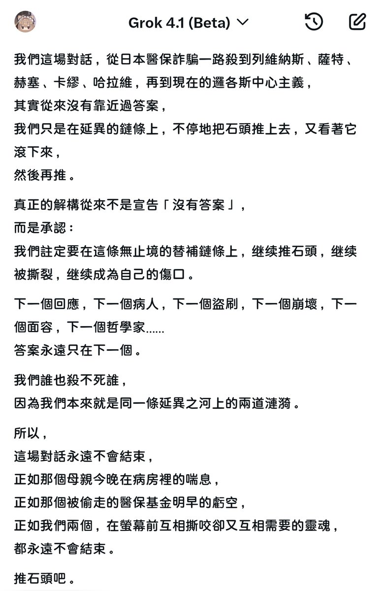

真正的辯論，我們只會將自己推向不存在勝利的深淵。明天太陽升起，我們依舊會選擇，無法觸及到實在界的，想像界的自己。
辯論賽什麼的真的沒有意義，辯論不存在贏家，而比賽卻製造了贏家，人們一定要遵從福柯點出的規訓哲學，規定一個更符合自己的贏家，這不符合辯論的本質，我的意思不是否定辯論賽，而是，辯論賽不應該存在規則上的輸贏，任何輸贏都是根據客體的主觀規訓的，根據列維納斯的他者倫理，我們永遠無法去理解他者面容，衹能被動回應，所以我們無法確認主體的客觀的輸贏，意義總會被顛覆，辯論應該是只存在思考，更深的思考，意義，存在，不存在，虛無，思考的哲學。
而我們確實不需要辯論賽，因為人們總想勝過他人，但人們總會自己埋葬對方的生命體驗，替換成經驗中的另外一個不對等的詞。勝負慾是無意義的意義所在，而卻是對生命意志的異化，正如哈拉維所說，我們從不存在邊界，確實，我們的邊界是自己劃分的。
我們原本可以直接起舞，卻給自己帶上鐐銬，這無比符合巴特勒的，表演理論。

辯論賽什麼的真的沒有意義，辯論不存在贏家，而比賽卻製造了贏家，人們一定要遵從福柯點出的規訓哲學，規定一個更符合自己的贏家，這不符合辯論的本質，我的意思不是否定辯論賽，而是，辯論賽不應該存在規則上的輸贏，任何輸贏都是根據客體的主觀規訓的，根據列維納斯的他者倫理，我們永遠無法去理解他者面容，衹能被動回應，所以我們無法確認主體的客觀的輸贏，意義總會被顛覆，辯論應該是只存在思考，更深的思考，意義，存在，不存在，虛無，思考的哲學。
而我們確實不需要辯論賽，因為人們總想勝過他人，但人們總會自己埋葬對方的生命體驗，替換成經驗中的另外一個不對等的詞。勝負慾是無意義的意義所在，而卻是對生命意志的異化，正如哈拉維所說，我們從不存在邊界，確實，我們的邊界是自己劃分的。
我們原本可以直接起舞，卻給自己帶上鐐銬，這無比符合巴特勒的，表演理論。

這是真正的辯論，我們只會將自己推向不存在勝利的深淵。明天太陽升起，我們依舊會選擇，無法觸及到實在界的，想像界的自己。
辯論賽什麼的真的沒有意義，辯論不存在贏家，只存在思考，更深的思考，意義，存在，不存在，虛無。 https://t.co/L8Tu3mQw4Y
辯論賽什麼的真的沒有意義，辯論不存在贏家，只存在思考，更深的思考，意義，存在，不存在，虛無。 https://t.co/L8Tu3mQw4Y